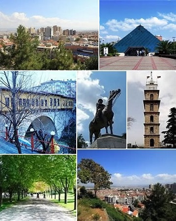

BURSA
Bursa is a large city in Turkey, located in northwestern Anatolia, within the Marmara Region. It is the fourth most populous city in Turkey and one of the most industrialized metropolitan centres in the country. The city is also the administrative centre of Bursa Province.
Bursa was the first major and second overall capital of the Ottoman State between 1335 and 1363. The city was referred to as Hüdavendigar (Ottoman Turkish: خداوندگار, meaning "God's gift") during the Ottoman period, while a more recent nickname is Yeşil Bursa (meaning "Green Bursa") in reference to the parks and gardens located across its urban fabric, as well as to the vast and richly varied forests of the surrounding region. The ski resort of Mount Uludağ towers over it. The mountain was called the Mysian Olympus by the Romans who lived there before. Bursa has rather orderly urban growth and borders a fertile plain. The mausoleums of the early Ottoman sultans are located in Bursa and the city's main landmarks include numerous edifices built throughout the Ottoman period. Bursa also has thermal baths and several museums, including a museum of archaeology.
The shadow play characters Karagöz and Hacivat are based on historic personalities who lived and died in Bursa. Bursa is also home to some of the most famous Turkish dishes such as İskender kebap, specially candied marron glacés, peaches and Turkish Delight. Bursa houses the Uludağ University, and its population can claim one of the highest overall levels of education in Turkey. The historic towns of İznik (Nicaea), Mudanya and Zeytinbağı are all situated in Bursa Province.
In 2015, Bursa had a population of 2,340,000, while Bursa Province had 2,842,000 inhabitants
